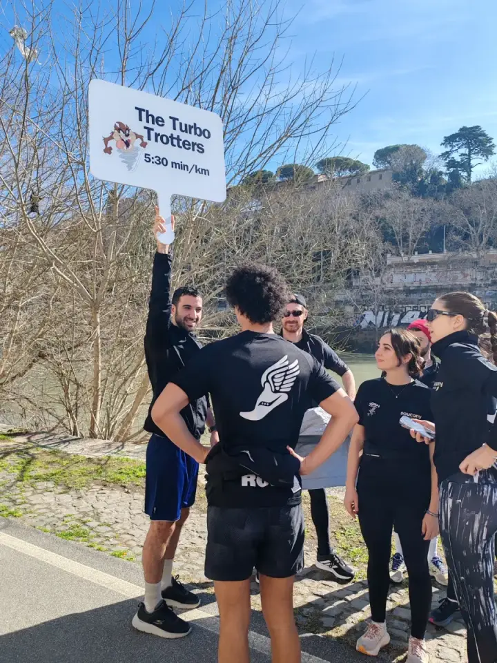
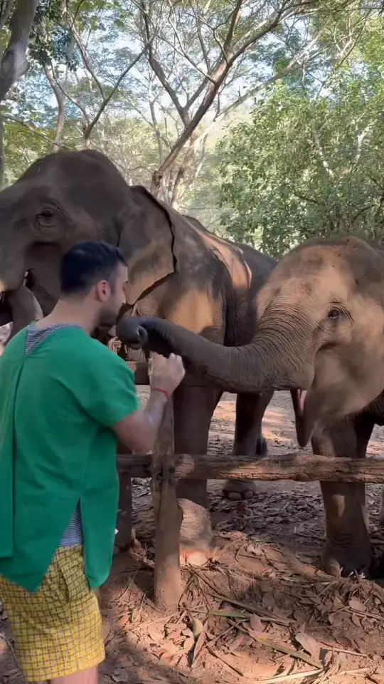

Train together.
The most important part. Showing up, warming up and running side by side turns a hard session into a good morning.
Off the clock
Engineer by day. The rest of the time I’m exploring new places, cooking, running with friends and putting myself to the test.
For three years I’ve been part of Amor Run Club, an international running community. It has pushed me to run marathons and give that little extra, taken me to run in unreal places, from Versailles to Hadrian’s Villa in Tivoli, given me a growing collection of medals and brought people into my life who are here to stay.

PacerThe most important part. Showing up, warming up and running side by side turns a hard session into a good morning.
The run ends at the table, with coffee and stories about the route or the goals we’re chasing. That’s where teammates become friends.
An international community means a race abroad always comes with people to run it with.
Races give the training a goal, and every medal comes with a story.
Not a CV. Just what you’d find out after a coffee with me.
I’d rather try and get it wrong than wonder how it would have gone. A new sport, a new city, a new role at work: I learn the most outside my comfort zone.
On land I travel to get a little lost: the side street, the trail with no sign. When there’s sea, I put on fins and a mask and go looking for fish.

Some things you have to do at least once. Petting and feeding elephants was one of them, and I’d do it again tomorrow.
Cooking is how I switch off, and tasting is how I get to know a place. Being Roman, carbonara is my favourite dish to make, and above all to eat.
Travel to lose yourself, to find yourself, to leave something of you behind, and bring home in your luggage a part of you that you never knew.
Rome, Italy · Remote and hybrid